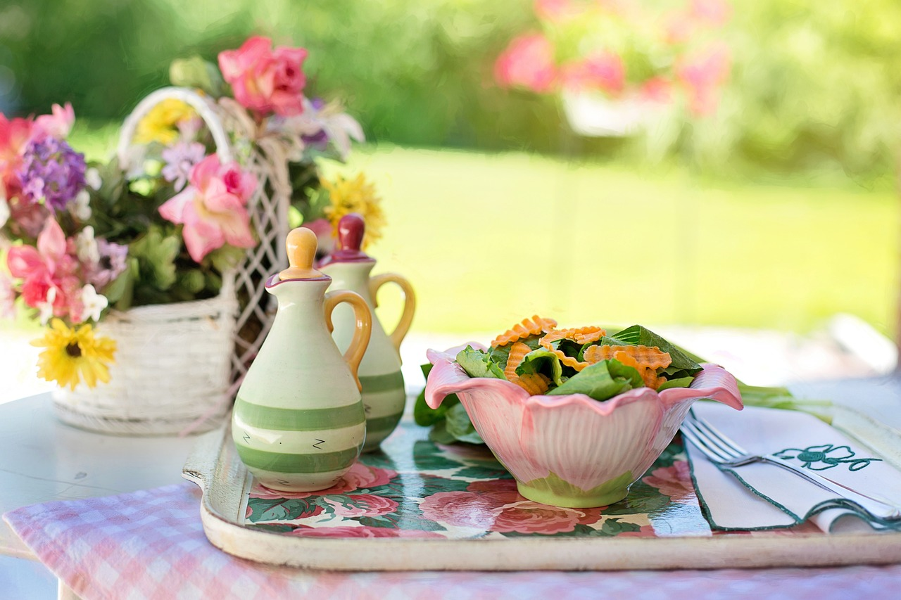

Salad

Description
What better summer dish than a nice crunchy salad with fresh veggies from the garden?
You really can throw anything in these. I usually do and it turns out great. Salads are super healthy and great way to get in shape too. What's not to like?
Ingredients
- Lettuce (pick any type you want)
- Veggies (go wild here too, everything goes as long as it can be eaten raw and does not poison you)
- Salt and Pepper
- 1 tbsp Olive oil
- 1 tbsp Balsamic vinegar
- Parmegiano reggiano (optional) for garnishing
Steps
- Under cold water wash the lettuce (and preferable the veggies too).
- Rinse the lettuce thoroughly. A salad spinner works great for getting most of the water out.
- Cut the vegetables in bite sized pieces and add the pieces with the lettuce in a big bowl.
- Whisk together oil, vinegar, salt and pepper until creamy. This is called Vinaigrette
- Mix everything together in the big bowl and optionally garnish with Parmesan shavings.
- Enjoy getting healthier.
Back to main-page